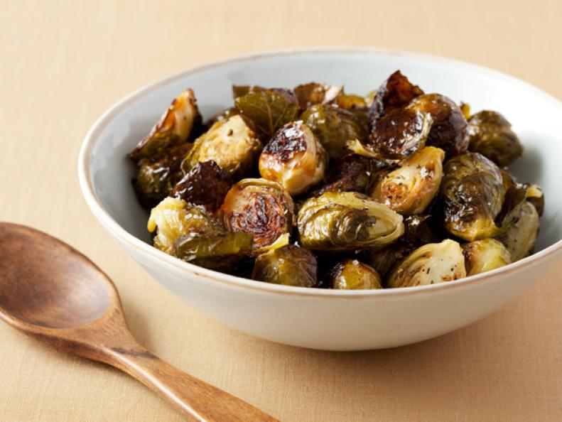

Roasted Brussels Sprouts

A can't miss side dish for any meal.
These tender, crispy sprouts are roasted simply — with olive oil, salt and pepper — for a classic side that you just can't beat. One reviewer said it even won the kids over: "My kids have always hated Brussels sprouts, until I cooked this recipe. They loved it!"
Ingredients:
- 1 1/2 pounds Brussels sprouts
- 3 tablespoons good olive oil
- 3/4 teaspoon kosher salt
- 1/2 teaspoon freshly ground black pepper
Steps:
- Preheat oven to 400 degrees F.
- Cut off the brown ends of the Brussels sprouts and pull off any yellow outer leaves. Mix them in a bowl with the olive oil, salt and pepper. Pour them on a sheet pan and roast for 35 to 40 minutes, until crisp on the outside and tender on the inside. Shake the pan from time to time to brown the sprouts evenly. Sprinkle with more kosher salt ( I like these salty like French fries), and serve immediately.